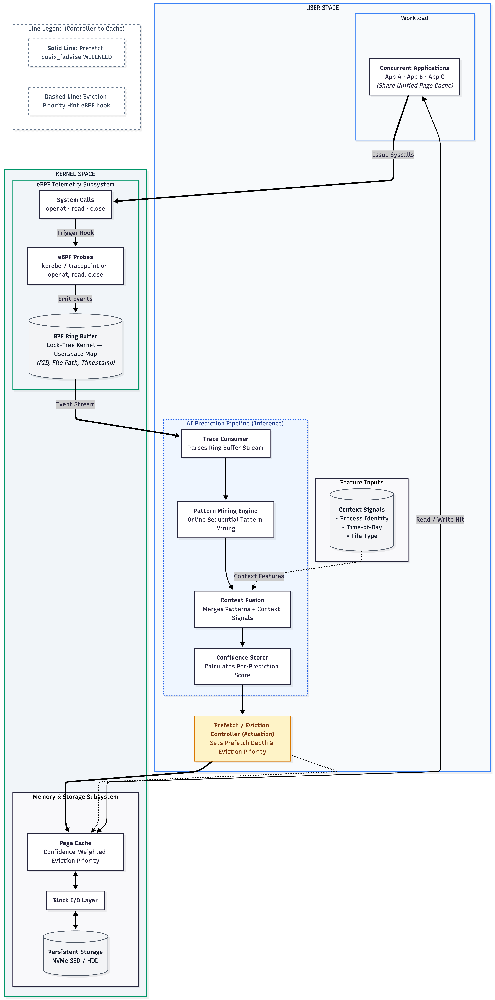

Operating systems project · Linux 6.8 · eBPF
When does learned file prefetching beat Linux readahead?
A daemon that watches which files programs open, learns the order, and loads the next one before it is asked for.
One request for the whole file
12.5%Ten 1 MB requests
100%mincore() 600 ms after the request.
See it run
Real terminal sessions from the test VM
Captured on the Ubuntu VM the experiments ran in, in the order you would run them. Output is unedited; where a log is long, the omitted lines are marked. Press Replay to watch a session type itself out.
Try it in your browser
The real model, a simulated page cache
This runs the project's prediction model, ported line for line from prefetch_model.py and checked against the Python version on the same traces (72,000 predictions, identical results). Three processes read files in a repeating order. Both caches see exactly the same reads; only the right one has the daemon prefetching. The kernel and disk are simulated: a prefetch here finishes instantly, which real disks do not (see the slow-disk results).
Linux alone
LRU cache, no prefetchingWith the daemon
same cache, plus prefetchingHit rate over time (rolling 300 reads)
How it works
Trace, predict, prefetch
Linux readahead only looks inside one file, and only after a program starts reading it. Many programs repeat patterns across files: a compiler opens the same headers every build, an indexer walks the same tree every pass. The daemon learns those patterns per process and asks the kernel to load the next file early.
sys_enter_read, close
Dashed boxes run in the kernel; solid boxes run in the userspace daemon.
The model
For every suffix of the last five files a process opened, the model counts which file came next. Longer matching histories count more. Process name, time of day and file extension adjust the score.
A file with confidence of 0.5 or more is a candidate. The actuator sends at most two requests per open, skips anything prefetched in the last five seconds, and runs the system calls on worker threads so tracing never stalls.
Cost per open event
| Step | Time |
|---|---|
| Model update | O(W²) |
| Prediction | O(W² + W·F + M log M) |
| Dispatch | O(k) |
| Measured, model + dispatch | 50–138 µs |
W = 5 files of history, F = distinct successors of a context, M ≤ W·F candidates, k = 2 prefetches per event.
Original architecture diagram

Inside the code
The three parts that do the work
Excerpts from the repository: the eBPF probe that turns a successful openat into an event, the model that ranks the next file, and the prefetch call that works around the 12.5% limit.
The 12.5% limit
Why the first evaluation said “no gain”
The first measurements under memory pressure showed no throughput gain, while the daemon reported 99% prediction precision. Those two facts did not fit. Checking the cache directly with mincore() showed the cause: one WILLNEED request covering a 10 MB file loads 12.5% of it, every time. readahead(2) behaves the same. Split into 1 MB requests, the whole file loads.
The kernel caps how much one request reads and reports nothing. The precision counter only checked whether a predicted file was read soon after, so it could not see the shortfall.
Share of a 10 MB file resident 600 ms after the request (5 trials each)
Results
Three settings, four configurations
Each configuration ran five times (the slow-disk test four times), with the page cache dropped and writeback settled before every run, one warm-up run discarded, and configurations interleaved so slow drift affects all of them.
Show the numbers as a table
Cost of a wrong guess
A wrong prefetch delays the file you actually need
A micro-benchmark prefetched two wrong 10 MB files and then read the one that was needed. On a disk capped at 100 MB/s the extra delay matched a simple formula: the wrong bytes divided by the disk bandwidth, minus the time the program spends before the read.
Defaults are the measured 100 MB/s case: a right guess cut the read from 48.7 ms to 6.5 ms. Break-even treats each guess as all-or-nothing, so it is an estimate.
Measured delay against think time (20 trials per point)
Lessons
What held up, and what did not
It helps only when three things are true at once: the access order is predictable, the working set is bigger than the cache, and the disk has spare capacity. Take one away and the gain shrinks or turns into a tail-latency cost.
Check the kernel, not your own counters. Two explanations in the first report, heavy userspace overhead and “eviction blindness”, fell apart once the harness was fixed and the 12.5% limit was found.
The harness changed the answer more than the model did. Without waiting for writeback, the same configuration scored 26.8% in its first run and about 72% after.
Limitations
- One virtual machine, four or five runs of 40–60 s per configuration.
- The main workload is synthetic and perfectly periodic. A workload over real files was too small and CPU-bound to separate the configurations.
- The slow disk is a cgroup bandwidth cap, not slow hardware. A later repeat of that test did not reproduce its baseline, and its logs were not kept, so treat that result as indicative.
- Prediction is per whole file. Files opened by relative path cannot be prefetched.
Reproduce
python3 -m unittest discover -s tests python3 eval_runner.py --baselines none,ra-tuned,full,full-gate --scale 3.5 --iterations 5 --ballast-gb 4 python3 eval_runner.py --baselines none,ra-tuned,full,full-gate --scale 3.5 --skip-setup --noise 0.3 --ballast-gb 4 python3 willneed_probe.py python3 misprediction_cost.py
Code and raw logs: github.com/sarveshsuhaskute/ai-file-prefetcher-
References
- J. Griffioen and R. Appleton, “Reducing file system latency using a predictive approach,” USENIX Summer Technical Conf., 1994.
- T. M. Kroeger and D. D. E. Long, “Predicting file system actions from prior events,” USENIX Annual Technical Conf., 1996, pp. 319–328.
- R. H. Patterson, G. A. Gibson, E. Ginting, D. Stodolsky, and J. Zelenka, “Informed prefetching and caching,” ACM SOSP, 1995, pp. 79–95.
- P. Cao, E. W. Felten, A. R. Karlin, and K. Li, “A study of integrated prefetching and caching strategies,” ACM SIGMETRICS, 1995, pp. 188–197.
- Z. Li, Z. Chen, S. M. Srinivasan, and Y. Zhou, “C-Miner: Mining block correlations in storage systems,” USENIX FAST, 2004, pp. 173–186.
- R. Agrawal and R. Srikant, “Mining sequential patterns,” IEEE ICDE, 1995, pp. 3–14.
- J. Pei et al., “Mining sequential patterns by pattern-growth: The PrefixSpan approach,” IEEE TKDE, vol. 16, no. 11, pp. 1424–1440, 2004.
- N. Megiddo and D. S. Modha, “ARC: A self-tuning, low overhead replacement cache,” USENIX FAST, 2003, pp. 115–130.
- M. Hashemi et al., “Learning memory access patterns,” ICML, PMLR 80, 2018, pp. 1919–1928.
- B. Esfahbod, “Preload — An adaptive prefetching daemon,” M.Sc. thesis, Univ. of Toronto, 2006.
- F. Wu, H. Xi, and C. Xu, “On the design of a new Linux readahead framework,” ACM SIGOPS OSR, vol. 42, no. 5, 2008.
- G. Savva and H. Herodotou, “Adaptive data prefetching for file storage systems using online machine learning,” Big Data and Cognitive Computing, vol. 10, no. 1, art. 28, 2026.
- X. Cao, S. Patel, S. Y. Lim, X. Han, and T. Pasquier, “FetchBPF: Customizable prefetching policies in Linux with eBPF,” USENIX ATC, 2024, pp. 369–378.
- T. Zussman, I. Zarkadas, et al., “cache_ext: Customizing the page cache with eBPF,” ACM SOSP, 2025.
- Z. Qi, “LearnedCache: eBPF-integrated perceptron-based eviction policies for the Linux page cache,” arXiv:2605.26168, 2026.
- B. Gbadamosi et al., “The eBPF runtime in the Linux kernel,” arXiv:2410.00026, 2024.
- B. Gregg, BPF Performance Tools, Addison-Wesley, 2019.
- IO Visor Project, BCC, github.com/iovisor/bcc.
- Linux man-pages: posix_fadvise(2), readahead(2), mincore(2).
- Z. Song, D. S. Berger, K. Li, and W. Lloyd, “Learning relaxed Belady for content distribution network caching,” USENIX NSDI, 2020, pp. 529–544.
- S. Psomadakis et al., “SnapBPF: Exploiting eBPF for serverless snapshot prefetching,” ACM HotStorage, 2025, pp. 9–16.
- Linux kernel documentation, “PSI — Pressure Stall Information.”